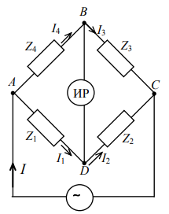
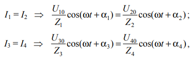

ТЕОРЕТИЧЕСКИЕ СВЕДЕНИЯ
ЦЕЛЬ РАБОТЫ
Ознакомиться c принципом работы уравновешенного моста переменного тока; освоить методику измерения электрической емкости С и индуктивности L.
Индуктивность L катушек и емкость С конденсаторов проявляются при изменяющихся токах и напряжениях. Параметры измеряются методом уравновешенного моста. Схема моста представлена на рис. 53.1. Устройства с высоким внутренним сопротивлением используются как индикаторы равновесия. Электрометрический усилитель и осциллограф также служат индикаторами. Четыре плеча моста могут содержать емкость С, индуктивность L и активное сопротивление R. Полное сопротивление плеча рассчитывается по формуле.
Здесь ωL и 1/ωC − индуктивное и емкостное сопротивления соответственно. Сдвиг фаз α определяется по формуле между напряжением U и силой тока I в плече моста.
Схема моста представлена на рис. 53.1. Источник синусоидального напряжения подключен к точкам A и C моста.
U10, U20, U30, U40 обозначают амплитудные значения напряжений на сопротивлениях. Z1, Z2, Z3, Z4 обозначают амплитудные значения напряжений моста. ϕ1, ϕ2, ϕ3 и ϕ4 обозначают разности фаз между напряжениями и напряжением источника. Соотношения справедливы для напряжений ветвей ADC и ABC моста.
Сила тока должна быть равна нулю в диагонали BD при равновесии моста. Напряжения должны быть равны нулю между точками B и D. Z1 и Z4, а также Z2 и Z3, должны быть равны попарно для уравновешенного моста.
Ток не течет через индикатор. Z1 и Z2, а также Z3 и Z4, должны быть равны попарно в любой момент времени. Условия можно записать по закону Ома.
α1, α2, α3, α4 обозначают разности фаз между токами и напряжениями плеч моста.
Соотношения выполняются при равенстве сдвигов фаз сил токов: α1 = α2 и α3 = α4.
Условие для сопротивлений Z плеч получается в результате деления первого уравнения на второе.
Амплитуды и сдвиги фаз напряжений и токов нужно уравнивать для уравновешивания моста.
Схема моста упрощается, если в одну из ветвей включить два активных сопротивления. Образцовые резисторы можно изготовить точнее, чем конденсаторы или катушки. Простые мосты обладают большей точностью.
Простейшая схема показана на рис. 53.2. Сх обозначает измеряемую емкость. С0 обозначает образцовые активные сопротивления. R1 и R2 обозначают образцовые активные сопротивления.
Схема применима для измерения емкостей конденсаторов с малыми утечками заряда.
Условие упрощается и устанавливает связь между измеряемой емкостью и остальными параметрами моста.
Мост можно уравновесить, изменяя образцовую емкость С0 при заданном отношении R2/R1 или изменяя это отношение при постоянной емкости С0.
Мостик Соти используется для измерения ёмкости. Этот метод является одним из самых точных. Измерительный мост Уитстона иллюстрирует концепцию дифференциальных измерений. Разновидности моста используются для измерения ёмкости, индуктивности и импеданса.
Мост Уитстона предложен Самуэлем Хантером Кристи. Чарльз Уитстон усовершенствовал мост Уитстона. Мост Уитстона относится к одинарным мостам. Он является электрическим аналогом рычажных аптекарских весов. Принцип измерения основан на взаимной компенсации сопротивлений.
Гальванометр используется в качестве индикатора. Показания гальванометра равны нулю в момент равновесия моста. Схема моста Уитстона содержит гальванометр, источник питания и резисторы.
Ток I3 течет по участку ACD. Равномерное падение потенциала наблюдается от точки A до точки C. Ток I1 течет в цепи ABC. Разность потенциалов равна нулю в точке D.
Сопротивления R1 и R2 подбираются для достижения равновесия. Формула определяет неизвестное сопротивление Rx. Реохорд позволяет проводить измерения электрического сопротивления. Первый реохорд построен Иоганном Поггендорфом. Вольтагометр усложняет измерение сопротивления.
Конструкция вольтагометра включает барабан и проволоку. Ртутные контакты используются в ртутном вольтагометре. Схема моста Соти содержит конденсаторы, сопротивления и мультиметр. Мультиметр используется в качестве индикатора. Источник питания имеет частоту 5000 Гц.
Потенциалы точек A, B, M, N обозначаются как φA, φB, φM, φN. Напряжение на обкладках конденсаторов обозначается как Δφ1 и Δφ2. Токи в ветвях MAN и MBN являются переменными.
Ток в диагонали моста равен нулю при равенстве потенциалов. Заряд на конденсаторе C1 определяется временем Δt и сопротивлением R1. Заряд на конденсаторе C2 определяется временем Δt и сопротивлением R2.
Электроемкость определяется как количество электричества для изменения потенциала. Соотношение между R1, R2 и C1, C2 выражается в формуле C1 * R1 = C2 * R2. Удельное сопротивление струны обозначается как ρ. Сечение струны обозначается как s. Длина участков струны обозначается как l1 и l2.
Контакт N изменяет соотношение плеч. Приближение контакта N приводит к минимальному напряжению. Сопротивления R1 и R2 подбираются для выполнения соотношения C1 * l1 = C2 * l2. Соотношение (5) используется для измерения неизвестной электроемкости.
Электрическое сопротивление определяется по формуле R = ρ * l / s. Гальванометр показывает минимальное напряжение при равновесии. Результаты измерений зависят от точности компонентов схемы. Электрическая цепь состоит из источника питания и нагрузок.
Измерение проводится с помощью мостовой схемы. Основная задача моста состоит в определении неизвестного параметра. Сопротивления R3 и R4 выполняют функции участков реохорда. Реостат позволяет регулировать ток в цепи.
Контакт реохорда движется по натянутой струне. Измерительный мост основан на принципе компенсации. Сопротивления R1 и R2 находятся в равновесии при определенных значениях. Ток в ветвях показывает разность потенциалов.
Электрическая емкость определяется по формуле C = Q / Δφ. Заряд на конденсаторе зависит от его ёмкости и напряжения. Потенциал в точке зависит от напряжения и расположения. Сопротивление влияет на ток в цепи.
Измерения проводятся для определения характеристик компонентов. Результаты экспериментов должны быть проанализированы. Электрическая энергия может быть передана через цепь. Замкнутая цепь имеет постоянный ток. Незамкнутая цепь приводит к переменному току.
Параметры схемы должны быть оптимизированы. Измерения проводятся для проверки теорий. Схемы разрабатываются для различных приложений.